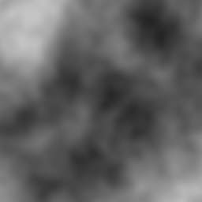
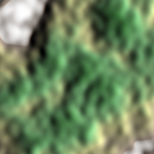
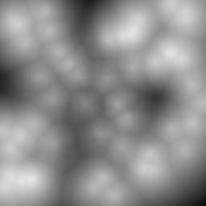
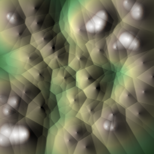

Procedural Terrain Generation
Hydraulic and Thermal Erosion
Hersh Kumar and Evan Guenterberg
Procedural Terrain Generation:
“A method of creating terrain algorithmically as opposed to manually, typically through a combination of human-generated assets and algorithms coupled with computer-generated randomness and processing power.”
Noise-based Terrain Generation
Terrain that is based on heightmaps generated through 2 dimensional noise functions. Common functions include Perlin and Worley noise.
Noise Functions
Noise algorithms that are used for terrain gneeration are usually gradient noise algorithms, which produce a lattice of random gradients and uses dot product interpolation to obtain values between the lattice points.
Perlin Noise
Effective Perlin Noise can be generated via layering different "octaves" of noise with different frequencies.
 Worley Noise (Voronoi Noise)
Worley noise is based on a kth-closest neighbor algorithm, and is useful in cell noise simulation.
 Achieving Realistic Terrain
Terrain generated via noise does not look realistic, so certain methods have been developed to modify the generated terrain. Most methods are based off of natural processes that occur over long timescales.
Hydraulic Erosion
Erosion caused by the action of water on rock surfaces. Examples include water striking a cliff face and cracking and splintering the rock, as well as rivers carving channels in rock.
Hydraulic Erosion Algorithm
This algorithm allows for the simulation of rainfall based erosion on a procedurally generated terrain map.
Step 1:
test
Step 2:
test
Step 3:
test
Step 4:
test
Before Hydraulic Erosion
This is procedurally generated terrain that has been generated via Perlin Noise.
After Hydraulic Erosion
This is procedurally generated terrain that has been hydraulically eroded for ______ iterations.
Hydraulic Erosion animations
These animations depict 200 iterations of hydraulic erosion on terrain.


Thermal Erosion
Erosion caused by the change in stationary angle of sediments such as sand and clay. Examples include avalanches and sand dunes.
Thermal Erosion Algorithm
This algorithm takes advantage of a properties of sediments that allow for simulation of natural thermal weathering.
Angles of Repose
Piles of sediment naturally form cones with inclination angles (also known as the talus angle) that can be determined from the content of the sediment.
Sediment Redistribution
If a uniform pile of sediment is steeper than the talus angle, sediment from the top will be redistributed to create a cone of inclination equivalent to the talus angle.
Python Implementation
mapsize = len(heightmap)
TALUS = 4/mapsize
copymap = [row[:] for row in heightmap]
for it in range(iterations):
print(it + 1,"/",iterations)
for y in range(mapsize):
for x in range(mapsize):
h = heightmap[x][y]
neighbors = get_neighbors(heightmap, x, y)
neighbor_deltas = []
for point in neighbors:
neighbor_deltas.append(h - heightmap[point[0]][point[1]])
dmax = max(neighbor_deltas)
index_of_increase = neighbor_deltas.index(dmax)
if (dmax <= TALUS):
continue
dmax *= .25
heightmap[x][y] -= dmax
heightmap[neighbors[index_of_increase][0]][neighbors[index_of_increase][1]] += dmaxEffects of Thermal Erosion
Steep slopes are rounded off, and steep mountains begin to have more defined edges and ridges. "Lumpy" terrain decreases, and valleys and plains form instead.
Before Thermal Erosion
This is procedurally generated terrain that has been generated via Perlin Noise.
After Thermal Erosion
This is procedurally generated terrain that has been thermally eroded for 50 iterations.
Thermal Erosion animations
These animations depict 200 iterations of thermal erosion on terrain. Note that the effect of the erosion becomes less evident as the hills become less steep.
Combined Erosion
We can simulate a mix of these techniques by running both erosion algorithms on the same heightmap to achieve terrain that has been eroded by both water and sediment.
Before Combined Erosion
This is procedurally generated terrain that has been generated via Worley Noise.
After Combined Erosion
This is procedurally generated terrain that has been eroded via both hydraulic and thermal erosion.